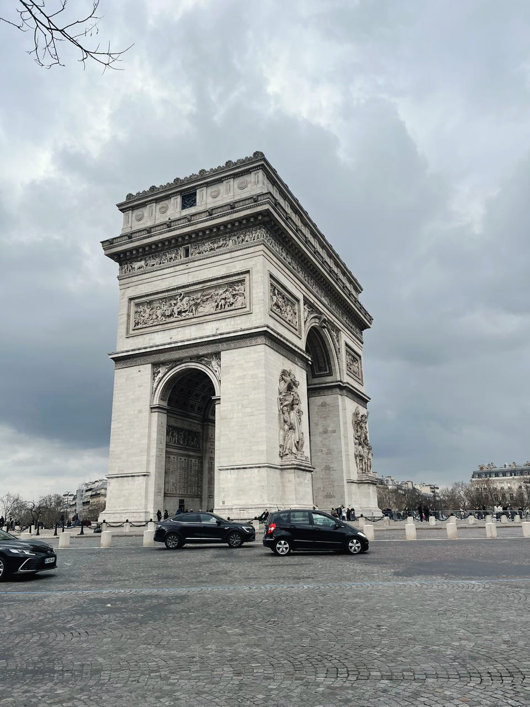
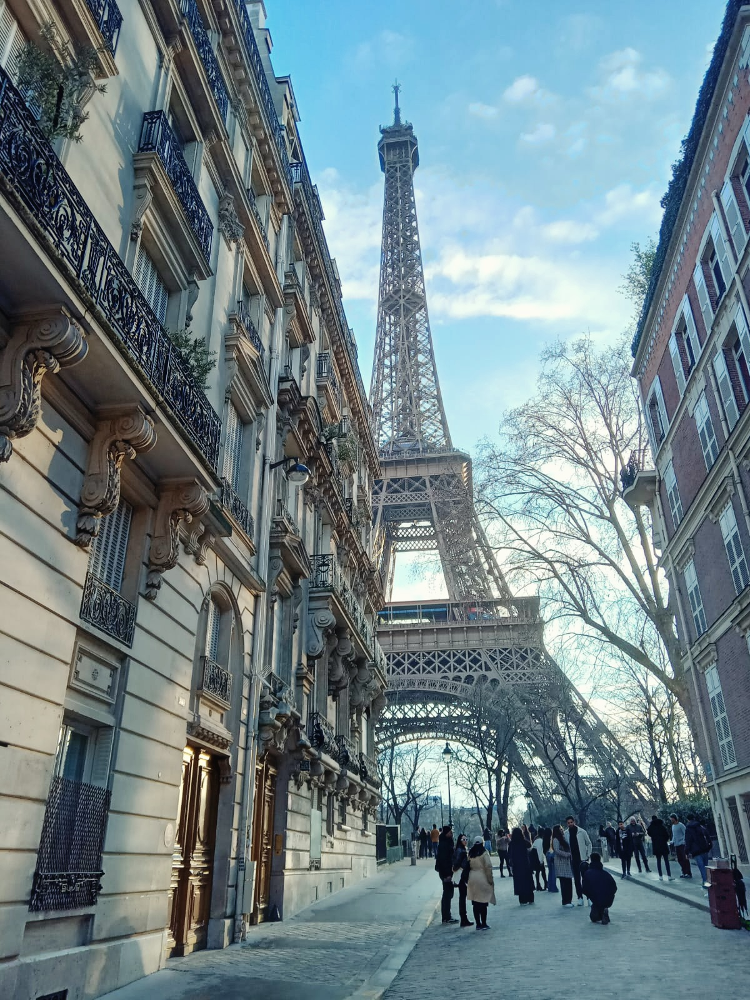

Francia es uno de los países más influyentes de Europa occidental y un referente global en historia, arte y gastronomía. Su capital, París, conocida mundialmente como la Ville Lumière, combina avenidas históricas, museos de primer nivel como el Louvre y el d'Orsay, y una vida cultural cotidiana marcada por las librerías, los teatros y los cafés. Más allá de la capital, ciudades como Lyon, Marsella y Estrasburgo aportan matices propios que reflejan siglos de intercambios y tradiciones locales.
Su diversidad geográfica es uno de sus mayores atractivos, ya que en trayectos relativamente cortos se pasa de las costas del océano Atlántico y el mar Mediterráneo a imponentes cadenas montañosas como los Alpes y los Pirineos. A este escenario se suman los campos de lavanda de la Provenza, los viñedos de Burdeos, Borgoña y Champagne, y los castillos del Valle del Loira, todo atravesado por una forma pausada y cuidada de disfrutar el día a día que suele resumirse como el art de vivre.
El turismo en el país abarca desde escapadas urbanas y recorridos por pueblos medievales hasta rutas enológicas, deportes de invierno y vacaciones junto al mar. Su cocina, declarada Patrimonio Cultural Inmaterial de la Humanidad por la UNESCO, convive con una fuerte tradición en la moda, el diseño y el savoir-faire artesanal, convirtiendo a Francia en un destino atractivo en cualquier época del año.

Allons enfants de la Patrie,
Le jour de gloire est arrivé !
Contre nous de la tyrannie,
L'étendard sanglant est levé, (bis)
Entendez-vous dans les campagnes
Mugir ces féroces soldats ?
Ils viennent jusque dans vos bras
Égorger vos fils, vos compagnes !
Aux armes, citoyens,
Formez vos bataillons,
Marchons, marchons !
Qu'un sang impur
Abreuve nos sillons !
Amour sacré de la Patrie,
Conduis, soutiens nos bras vengeurs
Liberté, Liberté chérie,
Combats avec tes défenseurs ! (bis)
Sous nos drapeaux que la victoire
Accoure à tes mâles accents,
Que tes ennemis expirants
Voient ton triomphe et notre gloire !
Aux armes, citoyens,
Formez vos bataillons,
Marchons, marchons !
Qu'un sang impur
Abreuve nos sillons !

